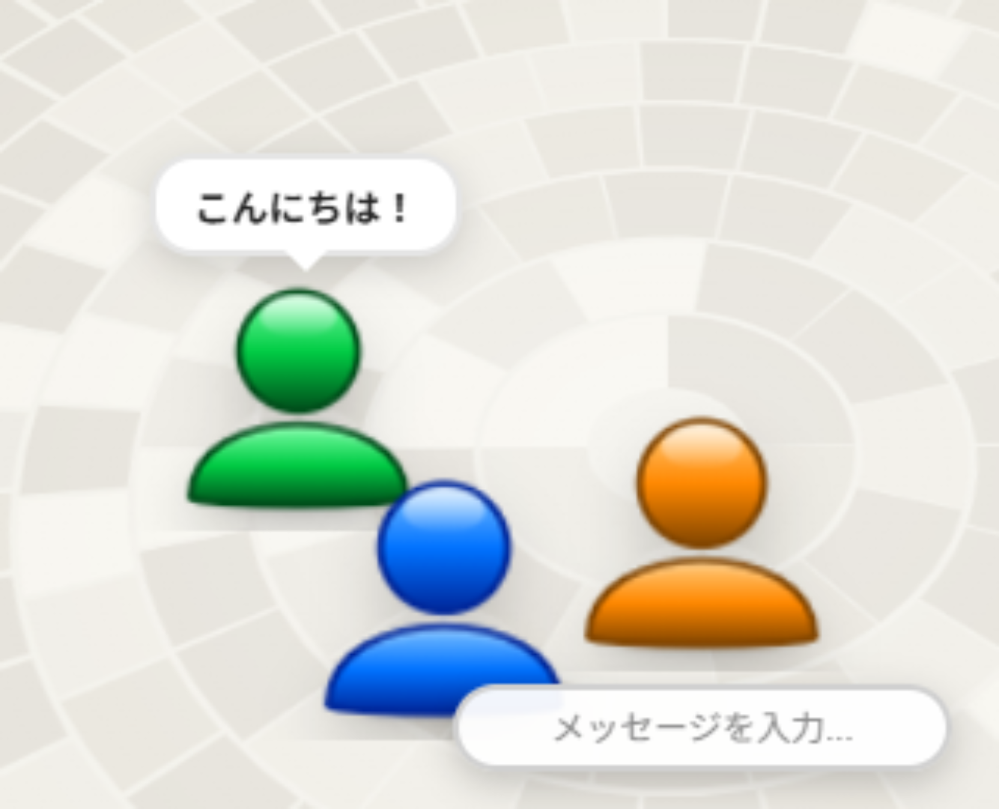
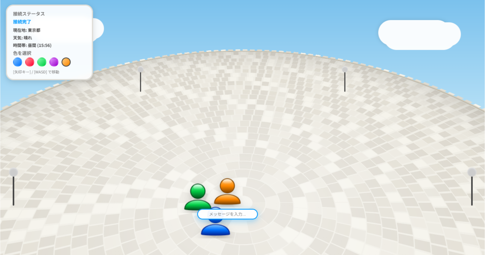
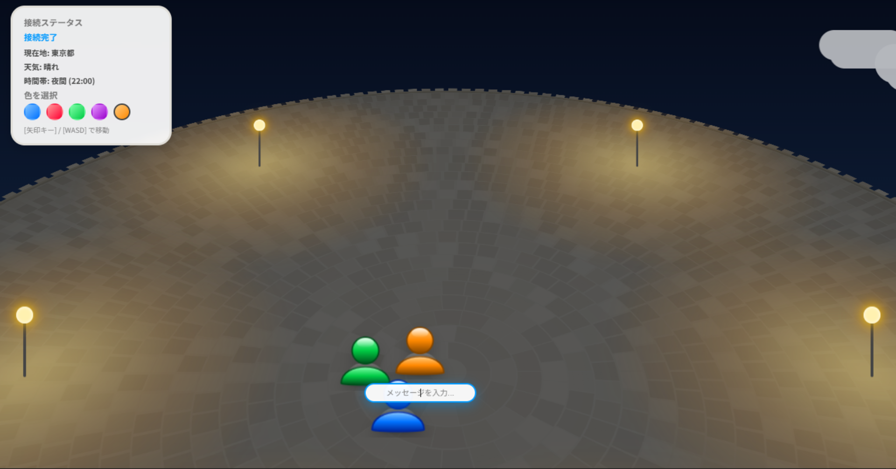
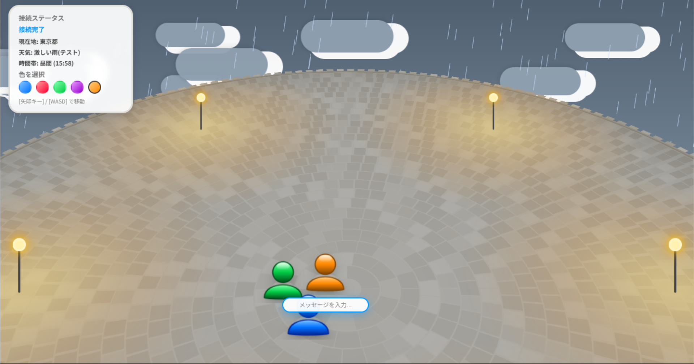

身近な仲間と集まる、新しいコミュニケーションの場
『Wi-Fi プラザ』は、自分のアバターを動かして、学校の友達や身近な仲間と気軽に集まることができるオンライン広場です。特別な準備をしなくても、ネットワークを通じていつでも同じ空間を共有することができます。
さらに、現実世界の空模様やお住まいの地域の時間帯とリアルタイムで連動。「晴れ」「雨」「夜」など、訪れる時間や天気によって広場の風景や雰囲気が様々に移り変わります。
チャットでメッセージを交わしたり、空の変化を一緒に眺めたり……。『Wi-Fi プラザ』で、ゆったりとした新しい交流体験を楽しんでみませんか？



